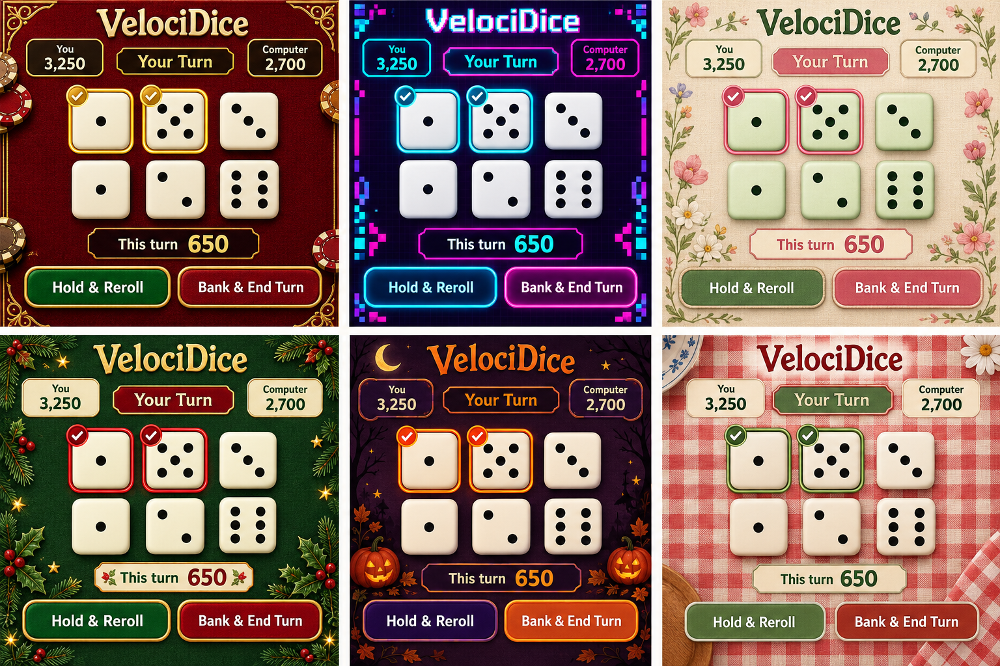

Six more looks for VelociDice
Concept artwork only. The five original themes are implemented; these six remain options to discuss.
| Position | Theme | Direction |
|---|---|---|
| Top left | Las Vegas Casino | Burgundy felt, gold trim and ivory dice. |
| Top middle | 80s Arcade | Neon cyan and pink on dark purple, with pixel details. |
| Top right | Flower Cottage | Cream linen, sage dice and delicate wildflowers. |
| Bottom left | Christmas | Evergreen, cranberry, gold and holly. |
| Bottom middle | Halloween | Plum, pumpkin orange, moons and autumn leaves. |
| Bottom right | Kitchen Tablecloth | Red gingham, ivory dice and sage accents. |
